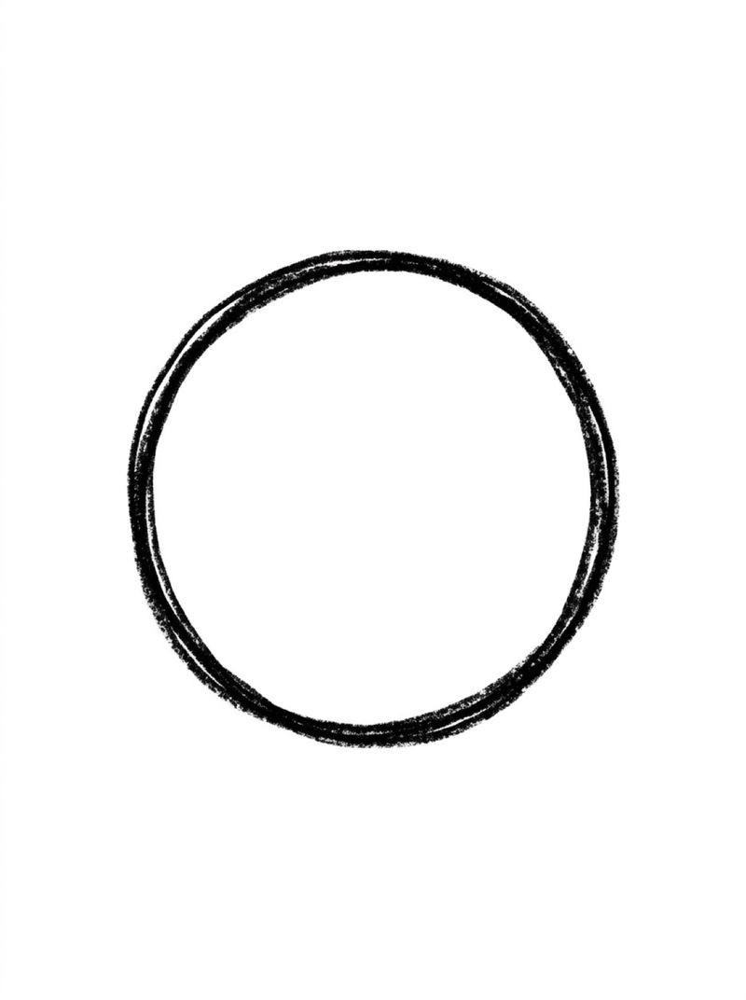
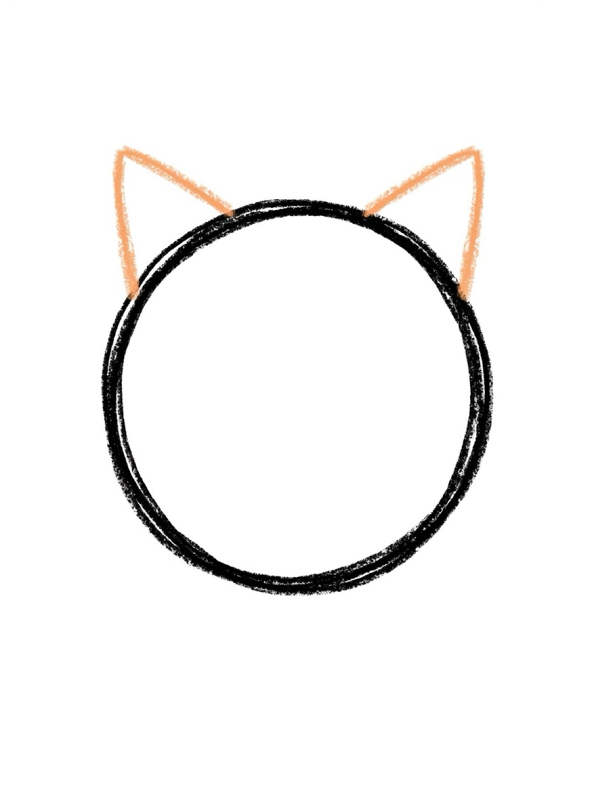
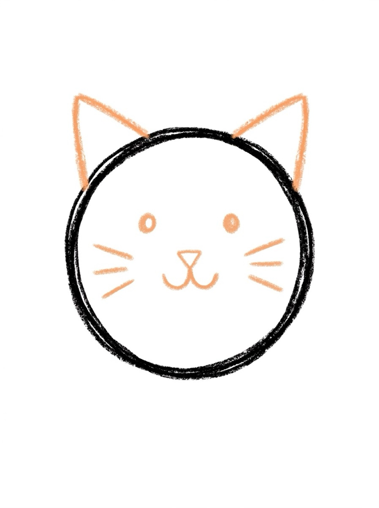
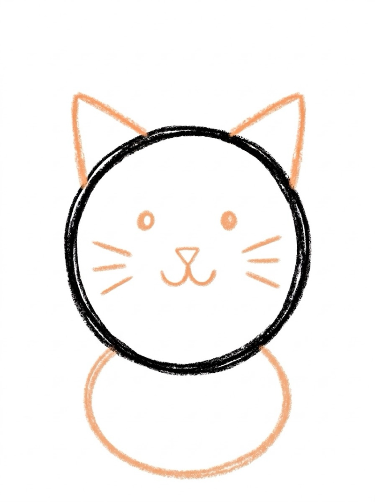
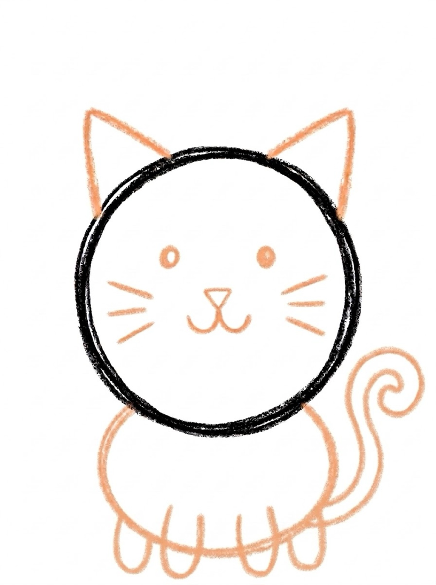
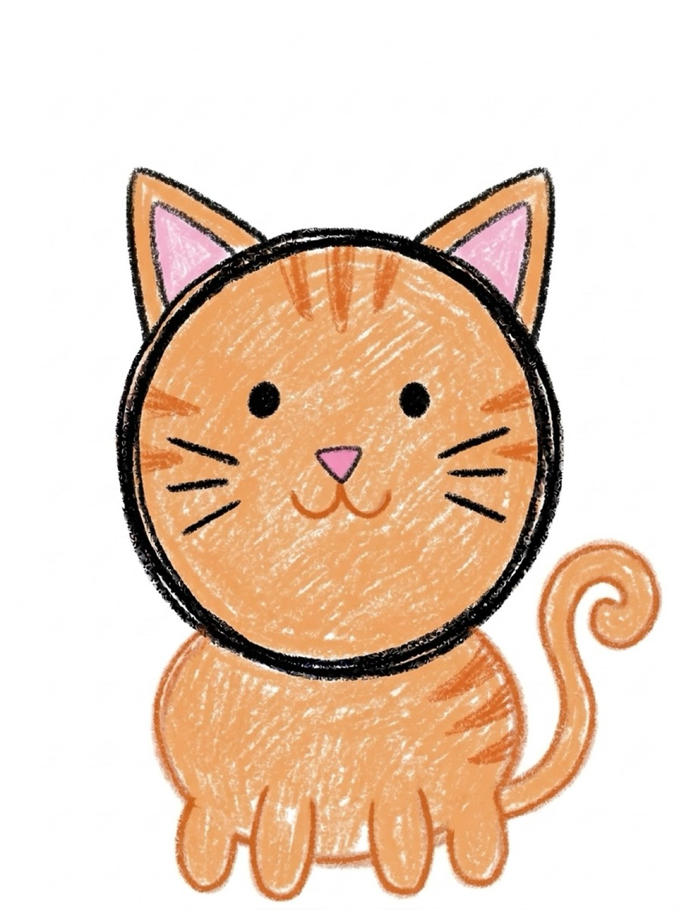

Cat Drawing for Kids How to Draw a Cat in 6 Easy Steps
Quick Answer
This free step-by-step tutorial shows kids how to draw a cat in six easy steps: a circle head, triangle ears, a cute face, an oval body, legs, and a curvy tail. Download the printable PDF, grab crayons, and follow along together. Made for ages 3 and up — no signup needed, just print and draw.
At a Glance
- Subject: How to draw a cat
- Ages: 3+
- Steps: 6 steps
- Time: ~15 min
- Difficulty: Easy
- Supplies: Paper, crayons
Every kid wants to draw a cat — or the cat they wish they had. This kitty is built from a circle, an oval, and two triangles, so even wobbly lines look charming. The whiskers are the magic detail that makes every kid's cat instantly recognizable.
✏️ How to Draw a Cat: Step by Step
One step per box — draw each new part in a different color so kids can see exactly what changed.
Step 1: The Head

Draw a big circle in the middle of your paper. This round shape becomes your cat's head.
Step 2: The Ears

Add two triangle ears on top of the circle. Pointy ears make it look extra cat-like.
Step 3: The Face

Draw two dot eyes, a tiny triangle nose, a w-shaped mouth, and three whisker lines on each cheek. The whiskers are the best part!
Step 4: The Body

Draw an oval below the head for the body — a little smaller than the head circle. Let it overlap the head slightly.
Step 5: The Legs and Tail

Add four legs under the body — two in front, two peeking out behind — and a long curvy tail swooping out to one side. A big curl makes a happy cat.
Step 6: Color It In

Color your cat! Orange with stripes is classic, but gray, black, or even purple cats are all great.
📊 Cat Drawing by Age
Every age can join in — just adjust the job.
| Age | What they can do | Tip |
|---|---|---|
| 3–4 | Trace the circle head and ears on the printable | Draw the whiskers for them — straight lines are hard at this age |
| 4–5 | Follow all 6 steps with a little help | Let them pick the cat's color — ownership keeps them engaged |
| 6+ | Draw solo and add their own details | Challenge: draw your cat next to a fish bowl |
🖨️ Download Your Free Cat Drawing Printable
The printable lays out all 6 steps one per box, big enough for little hands — kids draw right alongside each step.
⬇️ Open Free Printable 🖨️ Print🎁 Free printable for ages 3+
🐱 Copycat Challenge
Draw your cat twice — once sitting and once with the tail curled the other way. Then draw a real cat (or a stuffed animal) next to the cartoon one and compare. Which ears are pointier? Which tail is curlier? Drawing the same cat twice builds observation skills without feeling like practice.
What You'll Need to Draw a Cat
Grab a black crayon or marker for the outlines, plus whatever color your kid wants their cat to be — orange, gray, black, or something wild. Standard printer paper works fine. The whiskers are easier with a fine-tip marker if you have one, but crayons work too.
What They're Learning
This cat tutorial practices circles, ovals, and triangles — three core shapes in one drawing. The whiskers are straight-line practice that builds hand control, and placing the face features (two eyes, one nose, one mouth) teaches spatial awareness — everything has its spot. Following six steps in order builds sequencing skills too.
Make It Yours
Once the basic cat is done, try these twists: add stripes like a tiger cat, give it a bow tie or a collar, or draw it sleeping with closed curved-line eyes. Kids can also draw a whole cat family — big cats, tiny kittens, each one a different color. A fish bowl next to the cat tells a whole story.
🛒 Our Favorite Drawing Supplies
These are the supplies we reach for in our own home — washable (because kids), quality paper, and enough colors to avoid fights.
As an Amazon Associate, MomYouNeedThis earns from qualifying purchases — at no extra cost to you.
💡 Cat Drawing Tips for Parents
The trickiest part of this cat drawing is getting all four legs in — two front, two behind. If your child forgets the back legs, point at the picture and ask "where are the other two legs?" rather than drawing them yourself. Kids remember steps they figure out better than steps they were shown. And if the tail ends up on the wrong side, leave it — a cat with a tail on either side is still a cat.
Two things that help with every cat drawing attempt: let them pick the colors (a blue cat is still a cat), and don't fix their drawing. If they ask for help, draw on a separate piece of paper, not on theirs. Kids who feel ownership of their drawing come back for the next one; kids who feel corrected stop trying. The goal is a cat they're proud of, not a perfect one.
❓ Cat Drawing FAQs
What is the easiest way for a kid to draw a cat?
Start with a circle for the head and add two triangle ears on top. Give it dot eyes, a triangle nose, whiskers, and a smile, then add a round body, four legs — two front and two behind — and a curvy tail. Circles and triangles do all the work — no tricky shapes needed.
What age can kids start learning to draw a cat?
Most kids can follow the circle-and-triangle method around age 4 with a grown-up helping, and draw one on their own by ages 5 to 6. Younger children can trace the head, ears, and body on the printable.
What supplies do we need to draw a cat?
Just paper and crayons or markers. The free printable PDF lays out all six steps one per box so kids can draw right alongside each step. Orange, gray, or black crayons make great cats.
Is the cat drawing printable really free?
Yes — every printable on MomYouNeedThis is 100% free to download and print. No signup, no payment, just tap the download button.
How do I print the cat drawing tutorial?
Open the PDF and print at 100% scale (not 'fit to page') so the drawing boxes stay big enough for little hands. The printable is designed to stay large — never shrunk to force a fit.
📚 Keep Exploring
More free drawing tutorials and coloring pages made for little hands and busy parents.
✏️ All 22 Drawing Tutorials